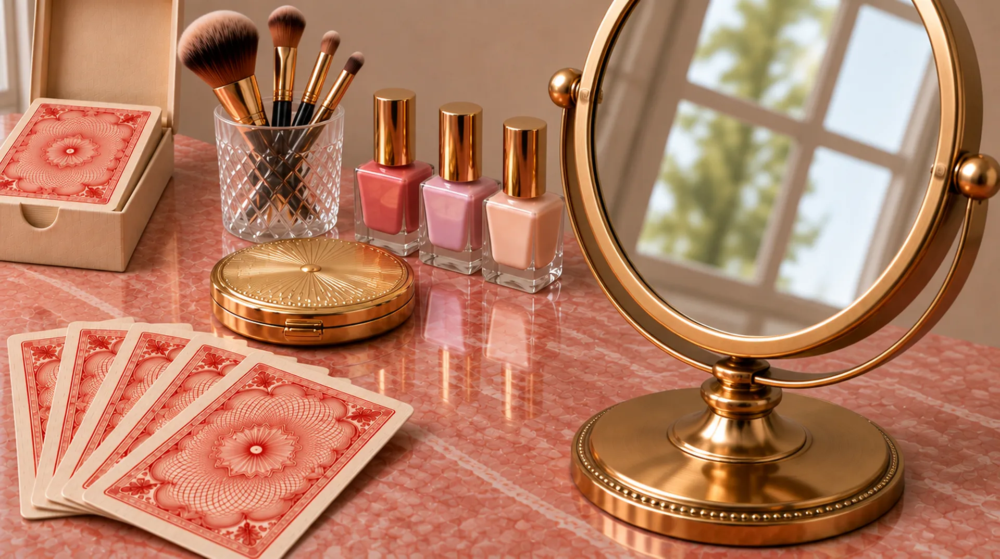

01 / 04
Besterdring 80
5014 HM Tilburg. Hier staat de kaptafel.
Kies een kaart
+31 6 42486026 · Besterdring 80
Over ons
Queen of Beauty is een schoonheidssalon aan de Besterdring 80, in Besterd, Tilburg-Noord, bij het Besterdplein.
Wat we zeker weten
01 / 04
5014 HM Tilburg. Hier staat de kaptafel.
02 / 04
Een wijk in Tilburg-Noord.
03 / 04
Om de hoek van het plein.
04 / 04
Elke kaart een kans op de hartenvrouw.

Eerlijk spel
Geen verzonnen verhalen, geen prijzen die we niet zeker weten. Bel of app ons voor het actuele aanbod en de openingstijden.